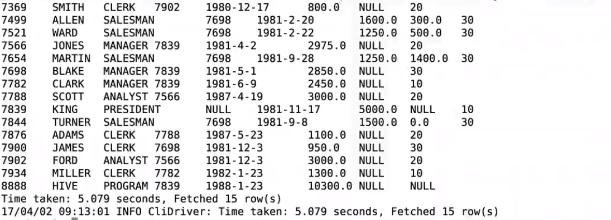
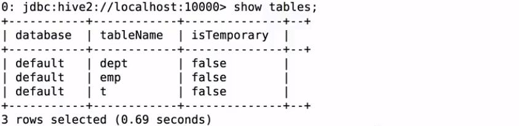

SQLContext的使用 Spark1.x中Spark SQL的入口点 : SQLContext
1 2 3 4 5 val sc: SparkContext val sqlContext = new org.apache.spark.sql.SQLContext(sc) import sqlContext.implicits._
建立一个scala maven项目
1 2 3 4 5 6 7 8 9 10 11 12 13 14 15 16 17 18 19 20 <properties > <scala.version > 2.11.8</scala.version > <spark.version > 2.1.0</spark.version > </properties > <dependencies > <dependency > <groupId > org.scala-lang</groupId > <artifactId > scala-library</artifactId > <version > ${scala.version}</version > </dependency > <dependency > <groupId > org.apache.spark</groupId > <artifactId > spark-sql_2.11</artifactId > <version > ${spark.version}</version > </dependency > </dependencies >
测试数据：
{“name”: “zhangsan”, “age”:30}
1 2 3 4 5 6 7 8 9 10 11 12 13 14 15 16 17 18 19 20 21 22 23 24 25 26 27 28 29 30 31 32 33 34 35 36 37 package com.imooc.sparkimport org.apache.spark.SparkContextimport org.apache.spark.sql.SQLContextimport org.apache.spark.SparkConfobject SQLContextApp { def main (args: Array[String]) { val path = args(0 ) val sparkConf = new SparkConf() val sc = new SparkContext(sparkConf) val sqlContext = new SQLContext(sc) val people = sqlContext.read.format("json" ).load(path) people.printSchema() people.show() sc.stop() } }
本地测试：
集群测试：
提交Spark Application到环境中运行
结果同上本地测试结果
HiveContext的使用 Spark1.x中Spark SQL的入口点 : HiveContext
1 2 val sc: SparkContext val sqlContext = new org.apache.spark.sql.hive.HiveContext(sc)
添加maven依赖
1 2 3 4 5 <dependency > <groupId > org.apache.spark</groupId > <artifactId > spark-hive_2.11</artifactId > <version > ${spark.version}</version > </dependency >
测试：
1 2 3 4 5 6 7 8 9 10 11 12 13 14 15 16 17 18 19 20 21 22 23 24 25 26 27 28 package com.kun.sparksqlimport org.apache.spark.sql.hive.HiveContextimport org.apache.spark.{SparkConf, SparkContext}object HiveContextApp { def main (args: Array[String]) { val sparkConf = new SparkConf() val sc = new SparkContext(sparkConf) val hiveContext = new HiveContext(sc) hiveContext.table("emp" ).show sc.stop() } }
本地测试和集群测试步骤同SQLContext的使用 雷同
提交Spark Application到环境中运行
SparkSession的使用 Spark2.x中Spark SQL的入口点 : SparkSession
1 2 3 4 5 6 7 8 9 10 import org.apache.spark.sql.SparkSessionval spark = SparkSession .builder() .appName("Spark SQL basic example" ) .config("spark.some.config.option" , "some-value" ) .getOrCreate() import spark.implicits._
测试：
1 2 3 4 5 6 7 8 9 10 11 12 13 14 15 16 17 18 19 20 package com.kun.sparksqlimport org.apache.spark.sql.SparkSessionobject SparkSessionApp { def main (args: Array[String]) { val spark = SparkSession.builder().appName("SparkSessionApp" ) .master("local[2]" ).getOrCreate() val people = spark.read.json("file:///Users/rocky/data/people.json" ) people.show() spark.stop() } }
spark-shell&spark-sql的使用 检查进程：
spark-shell 进入hive里：spark-shell –master local[2] 命令来启动spark-shell
查看hive里的表:
spark-sql 启动sparksql

查看spark sql执行计划（sql语句是任意写的；只是为了查看执行计划）
1 2 create table t(key string , value string );explain extended select a.key*(2 +3 ), b.value from t a join t b on a.key = b.key and a.key > 3 ;
执行计划：
1 2 3 4 5 6 7 8 9 10 11 12 13 14 15 16 17 18 19 20 21 22 23 24 25 26 27 28 29 30 31 32 33 34 35 == Parsed Logical Plan == 'Project [unresolvedalias(('a.key * (2 + 3)), None), 'b.value] +- 'Join Inner, (('a.key = 'b.key) && ('a.key > 3)) :- 'UnresolvedRelation `t`, a +- 'UnresolvedRelation `t`, b == Analyzed Logical Plan == (CAST(key AS DOUBLE) * CAST((2 + 3) AS DOUBLE)): double, value: string Project [(cast(key +- Join Inner, ((key :- SubqueryAlias a : +- MetastoreRelation default, t +- SubqueryAlias b +- MetastoreRelation default, t == Optimized Logical Plan == Project [(cast(key +- Join Inner, (key :- Project [key : +- Filter (isnotnull(key : +- MetastoreRelation default, t +- Filter (isnotnull(key +- MetastoreRelation default, t == Physical Plan == *Project [(cast(key#321 as double) * 5.0) AS (CAST(key AS DOUBLE) * CAST((2 + 3) AS DOUBLE))#325, value#324] +- *SortMergeJoin [key#321], [key#323], Inner :- *Sort [key#321 ASC NULLS FIRST], false, 0 : +- Exchange hashpartitioning(key : +- *Filter (isnotnull(key#321) && (cast(key#321 as double) > 3.0)) : +- HiveTableScan [key +- *Sort [key#323 ASC NULLS FIRST], false, 0 +- Exchange hashpartitioning(key +- *Filter (isnotnull(key#323) && (cast(key#323 as double) > 3.0)) +- HiveTableScan [key
thriftserver&beeline的使用 进入${Spark_home}/sbin下面；启动thriftserver：
1) 启动thriftserver: 默认端口是10000 ，可以修改
修改thriftserver启动占用的默认端口号：
2）启动beeline（${spark_home}/bin/beeline）（可以启动多个beenline客户端）
beeline -u jdbc:hive2://localhost:10000 -n hadoop

thriftserver和普通的spark-shell/spark-sql有什么区别？
1）spark-shell、spark-sql都是一个spark application；
jdbc方式编程访问 注意事项：在使用jdbc开发时，一定要先启动thriftserver
Exception in thread “main” java.sql.SQLException:
添加maven依赖
1 2 3 4 5 <dependency > <groupId > org.spark-project.hive</groupId > <artifactId > hive-jdbc</artifactId > <version > 1.2.1.spark2</version > </dependency >
1 2 3 4 5 6 7 8 9 10 11 12 13 14 15 16 17 18 19 20 21 22 23 24 25 26 27 28 package com.kun.sparksqlimport java.sql.DriverManagerobject SparkSQLThriftServerApp { def main (args: Array[String]) { Class.forName("org.apache.hive.jdbc.HiveDriver" ) val conn = DriverManager.getConnection("jdbc:hive2://hadoop001:14000" ,"hadoop" ,"" ) val pstmt = conn.prepareStatement("select empno, ename, sal from emp" ) val rs = pstmt.executeQuery() while (rs.next()) { println("empno:" + rs.getInt("empno" ) + " , ename:" + rs.getString("ename" ) + " , sal:" + rs.getDouble("sal" )) } rs.close() pstmt.close() conn.close() } }